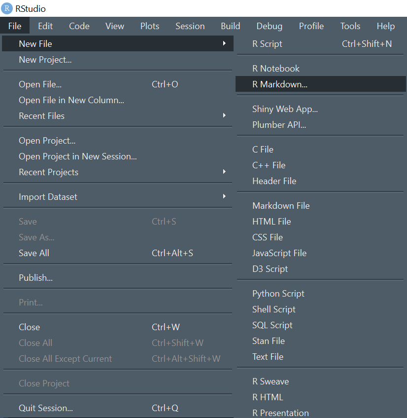
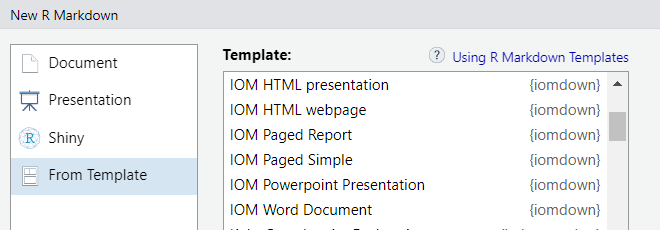

Overview
The International Organisation for Migration is part of the United Nations System.
The organisation supports three main strategic objectives:
Saving lives and protecting people on the move,
Driving solutions to displacement,
Facilitating pathways for regular migration.
The iomdown package provides a set of templates following IOM Brand recommendations.
The goal of this package is to ease and speed up the creation of reports, presentation and website while promoting the IOM visual identity.
Installation
This package is not on yet on CRAN. To to install it, you will need the pak package.
install.packages("pak")
library(pak)
pak::pkg_install("iom/iomdown")
library(iomdown)Content
A package with all necessary templates to quickly create IOM branded reproducible analysis:
Depending on the final output, create a new Rmd file and select on of the custom template that have been installed through the package.
To review some examples and user instructions, see:
- for presentation: [ pptx or html],
- for editable document: [docx],
- for article: [html],
- for paginated-PDF-ready document: [report or shorter note].
We recommend starting with report that provide the most detailed descriptions.
Usage
The iomdown templates are designed for R Markdown projects.
To use the package document templates within RStudio:
Step 1: Click the “File” menu then “New File” and choose “R Markdown”.

Step 2: In the “From Template” tab, choose one of the built-in custom templates.

Alternatively, you can also use the docx_simple, paged_report or paged_simple, pptx_slides, or html_slides engine in your existing R Markdown header.
For example:
Getting help
Please report any issues or bugs on GitHub issues, try to include a minimal reproducible example to help us understand your problem.
Contribute
Please note that the project is released with a Contributor Code of Conduct. By contributing to this project, you agree to abide by its terms.
To contribute with additional templates, do not hesitate to fork the repository and create a pull request.
In order to create a new template, you can use:
usethis::use_rmarkdown_template(
template_name = "Country_Factsheet",
template_dir = NULL,
template_description = "Key Statistical Facts for each Country",
template_create_dir = TRUE
)Then build the corresponding R functions with the R folder.
License
This package is distributed under the MIT License.